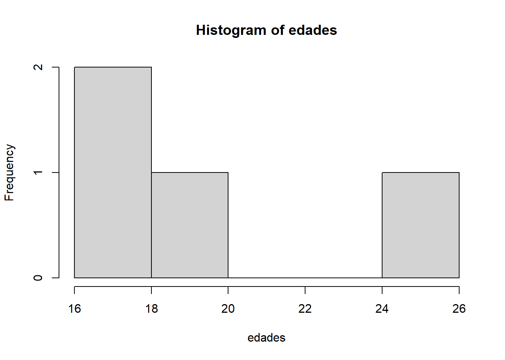

# Vectores numéricos
edades <- c(17, 20, 18, 25) # Enteros
alturas <- c(1.75, 1.68, 1.82, 1.65) # Decimales
# Vectores de texto (character)
nombres <- c("Juan", "Ana", "Luis", "María")
# Vectores lógicos
# Creados usando la función c()
mayores_de_edad <- c(FALSE, TRUE, TRUE, TRUE)
# O mediante una comparación empleando operadores lógicos
mayores_de_edad <- edades >= 184 Estructuras de datos en R
Las estructuras de datos representan el pilar esencial para el análisis estadístico y científico en el entorno R, ya que posibilitan la organización, almacenamiento y manipulación de información de manera sistemática y eficiente. Estas estructuras permiten gestionar desde datos simples, como valores individuales, hasta conjuntos complejos y heterogéneos, adaptándose a los requerimientos de diversos tipos de análisis y facilitando la reproducibilidad de los resultados (Ihaka & Gentleman, 1996; R Core Team, 2023).
En R, las principales estructuras de datos incluyen los vectores, matrices, data frames y listas. Cada una de estas estructuras ha sido diseñada para resolver problemas específicos y se adapta a diferentes escenarios analíticos. Los vectores constituyen la unidad básica y homogénea de almacenamiento, mientras que las matrices permiten organizar datos en dos dimensiones bajo la restricción de homogeneidad de tipo. Los data frames, por su parte, ofrecen una estructura tabular flexible, capaz de contener columnas de distintos tipos de datos, lo que resulta especialmente útil en el análisis de datos reales y heterogéneos. Finalmente, las listas proporcionan una solución versátil para almacenar colecciones de objetos de diferentes tipos y longitudes, facilitando la gestión de resultados complejos y la integración de diversas fuentes de información (R Core Team, 2023; Wickham & Grolemund, 2017).
4.1 Vectores
En el lenguaje R, los vectores constituyen la estructura de datos más elemental y versátil, sirviendo como base para la construcción de estructuras más complejas, tales como matrices y data frames. Un vector se define como una secuencia ordenada y unidimensional de elementos que comparten el mismo tipo de dato, ya sea numérico, de texto (caracter), o lógico. Esta homogeneidad en el tipo de datos asegura tanto la eficiencia computacional como la coherencia en las operaciones analíticas, facilitando la manipulación y el análisis de grandes volúmenes de información (Ihaka & Gentleman, 1996; R Core Team, 2023).
4.1.1 Tipos de Vectores y su creación
La función principal para la creación de vectores en R es c(), abreviatura de “concatenar”. Esta función permite agrupar elementos individuales o incluso otros vectores en una sola estructura (Wickham & Grolemund, 2017). Los tipos de vectores más comunes incluyen los numéricos, de texto y lógicos, como se ilustra a continuación:
En estos ejemplos, el vector edades almacena valores numéricos, nombres contiene cadenas de texto, y mayores_de_edad almacena valores lógicos (TRUE o FALSE) derivados de una comparación. Esta flexibilidad permite adaptar los vectores a diversas necesidades analíticas (Grolemund & Wickham, 2017).
4.1.2 Coerción de Tipos de Datos en Vectores
Una característica fundamental de los vectores en R es la coerción automática de tipos de datos. Cuando se intenta combinar elementos de diferentes tipos en un mismo vector, R convierte todos los elementos al tipo más general que pueda contener a todos ellos, siguiendo una jerarquía: carácter > numérico > lógico. Por ejemplo:
# Mezcla de números y texto
vector_mixto <- c(1, 2, "tres")
# Resultado: "1" "2" "tres"En este caso, todos los elementos se convierten a texto (character), ya que es el tipo más general capaz de representar cualquier valor. Este comportamiento, conocido como coerción implícita, es esencial para evitar errores en la manipulación de datos, pero requiere atención para no perder información relevante o introducir inconsistencias (R Core Team, 2023; Grolemund & Wickham, 2017).
4.1.3 Operaciones con Vectores
Los vectores en R permiten realizar una amplia gama de operaciones matemáticas, lógicas y de manipulación de datos, fundamentales para el análisis estadístico y la transformación de información. A continuación, se describen las operaciones más comunes:
4.1.3.1 Acceso a elementos específicos
El acceso a elementos individuales o múltiples de un vector se realiza mediante índices entre corchetes, comenzando en 1:
# Acceder a elementos individuales
primer_nombre <- nombres[1] # "Juan"
ultima_edad <- edades[4] # 25
# Acceder a múltiples elementos
nombres_seleccionados <- nombres[c(1, 3)] # "Juan" "Luis"4.1.3.2 Filtrado de elementos
El filtrado de elementos se logra aplicando condiciones lógicas, lo que permite seleccionar subconjuntos de datos de manera eficiente:
# Filtrar personas mayores de 20 años
mayores_20 <- edades[edades > 20]
# Obtener nombres de personas mayores de 20
nombres_mayores_20 <- nombres[edades > 20]Aquí, la condición edades > 20 genera un vector lógico que selecciona únicamente los valores que cumplen el criterio especificado (Field, 2013).
4.1.3.3 Combinación de vectores
La función c() también permite combinar varios vectores en uno solo:
# Combinar dos vectores
nuevo_vector <- c(edades, c(22, 21))
nuevo_vector[1] 17 20 18 25 22 21Aquí, el vector nuevo_vector combina los elementos del vector edades con los valores 22 y 21, generando un nuevo vector.
4.1.3.4 Funciones Útiles para Vectores
R ofrece una variedad de funciones para analizar y manipular vectores, tales como:
# Estadísticas básicas
promedio_edades <- mean(edades) # Media
edad_maxima <- max(edades) # Valor máximo
edad_minima <- min(edades) # Valor mínimo
total_elementos <- length(edades) # Número de elementos
# Ordenamiento
edades_ordenadas <- sort(edades) # Orden ascendente
edades_descendente <- sort(edades, decreasing = TRUE) # Orden descendente4.1.3.5 Aplicaciones Prácticas
Los vectores son esenciales en análisis estadísticos básicos y exploratorios:
# Análisis descriptivo
summary(edades) # Resumen estadístico Min. 1st Qu. Median Mean 3rd Qu. Max.
17.00 17.75 19.00 20.00 21.25 25.00 table(mayores_de_edad) # Tabla de frecuenciasmayores_de_edad
FALSE TRUE
1 3 hist(edades) # Histograma de edades
La utilización adecuada de los vectores en R resulta indispensable para la gestión eficiente de datos y la ejecución de análisis estadísticos rigurosos. El dominio de esta estructura permite no solo realizar procedimientos exploratorios y descriptivos, sino también sienta las bases metodológicas para la implementación de técnicas analíticas avanzadas y el desarrollo de modelos estadísticos complejos en entornos de investigación y aplicación profesional (Grolemund & Wickham, 2017; Tukey, 1977).
4.2 Matrices
Las matrices en R representan estructuras de datos bidimensionales que organizan información en filas y columnas, manteniendo la homogeneidad en el tipo de datos (numérico, lógico o de texto). Esta característica fundamental garantiza la integridad y eficiencia en las operaciones matemáticas y estadísticas, siendo particularmente relevantes en el análisis multivariado y la computación científica (Ihaka & Gentleman, 1996; Venables & Ripley, 2002).
A diferencia de los vectores unidimensionales, las matrices proporcionan un marco más sofisticado para la representación y manipulación de datos estructurados, facilitando la implementación de algoritmos estadísticos complejos y el análisis de datos experimentales (Montgomery et al., 2012).
4.2.1 Creación de Matrices y Argumentos de la Función matrix()
La función principal para la creación de matrices en R es matrix(). Sus argumentos más relevantes son:
data: Vector de datos a organizar en la matriz. Es el único argumento obligatorio.
nrow: Número de filas de la matriz. Opcional; si se omite, R lo infiere a partir de la longitud de
datay el valor dencol.ncol: Número de columnas de la matriz. Opcional; si se omite, R lo infiere a partir de la longitud de
datay el valor denrow.byrow: Lógico. Indica si los datos se llenan por filas (
TRUE) o por columnas (FALSE, valor por defecto).dimnames: Lista de dos vectores de caracteres para asignar nombres a filas y columnas.
El comportamiento de estos argumentos se ilustra en los siguientes ejemplos:
# Ejemplo 1: Solo se especifica data y nrow
# R calcula automáticamente el número de columnas
matriz1 <- matrix(1:6, nrow = 2)
print(matriz1) [,1] [,2] [,3]
[1,] 1 3 5
[2,] 2 4 6# Ejemplo 2: Solo se especifica data y ncol
# R calcula automáticamente el número de filas
matriz2 <- matrix(1:6, ncol = 2)
print(matriz2) [,1] [,2]
[1,] 1 4
[2,] 2 5
[3,] 3 6# Ejemplo 3: Se especifican nrow y ncol
matriz3 <- matrix(1:6, nrow = 2, ncol = 3)
print(matriz3) [,1] [,2] [,3]
[1,] 1 3 5
[2,] 2 4 6# Ejemplo 4: Uso del argumento byrow
matriz4 <- matrix(1:6, nrow = 2, ncol = 3, byrow = TRUE)
print(matriz4) [,1] [,2] [,3]
[1,] 1 2 3
[2,] 4 5 6# Ejemplo 5: Asignación de nombres a filas y columnas con dimnames
matriz5 <- matrix(1:4, nrow = 2, dimnames = list(c("Fila1", "Fila2"), c("Col1", "Col2")))
print(matriz5) Col1 Col2
Fila1 1 3
Fila2 2 4Si la longitud del vector data no coincide exactamente con el producto de nrow y ncol, R reciclará los valores del vector para completar la matriz. Este comportamiento, conocido como reciclaje de datos, puede ser útil en ciertos contextos, pero también puede generar resultados inesperados si no se verifica la consistencia de los datos (R Core Team, 2023).
# Ejemplo de reciclaje de datos
matriz6 <- matrix(1:3, nrow = 2, ncol = 4)
print(matriz6) # R repite los valores de 1:3 hasta llenar la matriz [,1] [,2] [,3] [,4]
[1,] 1 3 2 1
[2,] 2 1 3 24.2.2 Propiedades y Atributos de las Matrices
Las matrices en R poseen atributos específicos que pueden ser consultados y modificados mediante funciones especializadas. Es posible obtener y modificar las dimensiones, así como asignar nombres a filas y columnas para mejorar la legibilidad y trazabilidad de los datos (Venables & Ripley, 2002; Grolemund & Wickham, 2017).
# Dimensiones de la matriz
dim(matriz1) # Devuelve (filas, columnas)[1] 2 3nrow(matriz1) # Número de filas[1] 2ncol(matriz1) # Número de columnas[1] 3# Asignación de nombres a filas y columnas
rownames(matriz1) <- c("Fila1", "Fila2")
colnames(matriz1) <- c("Col1", "Col2", "Col3")
print(matriz1) Col1 Col2 Col3
Fila1 1 3 5
Fila2 2 4 6El acceso a los elementos de una matriz se realiza mediante la notación [fila, columna]. Esta sintaxis permite extraer elementos individuales, filas completas, columnas completas o subconjuntos específicos de la matriz. Además, es posible aplicar condiciones lógicas para filtrar elementos, lo que resulta fundamental en la exploración y transformación de datos (Field, 2013; Grolemund & Wickham, 2017).
# Acceso a un elemento específico
elemento <- matriz1[2, 1] # Elemento en fila 2, columna 1
print(elemento)[1] 2# Acceso a una fila completa
fila_completa <- matriz1[1, ] # Primera fila completa
print(fila_completa)Col1 Col2 Col3
1 3 5 # Acceso a una columna completa
col_completa <- matriz1[, 2] # Segunda columna completa
print(col_completa)Fila1 Fila2
3 4 # Filtrado condicional
elementos_mayores_3 <- matriz1[matriz1 > 3]
print(elementos_mayores_3) # Devuelve: 4 5 6[1] 4 5 64.2.3 Combinación de Matrices
La combinación de matrices es una operación fundamental en la gestión y consolidación de datos, especialmente cuando se trabaja con información proveniente de diferentes fuentes o experimentos. R proporciona funciones específicas para unir matrices de manera eficiente y controlada: cbind() para combinar por columnas y rbind() para combinar por filas. Es indispensable que las dimensiones sean compatibles; de lo contrario, R generará un error. Además, la homogeneidad de tipo de datos se mantiene, y si se combinan tipos distintos, R aplicará coerción automática al tipo más general (R Core Team, 2023; Field, 2013).
# Crear dos matrices compatibles para combinar
matrizA <- matrix(1:6, nrow = 3)
matrizB <- matrix(7:12, nrow = 3)
# Combinación por columnas
matriz_columnas <- cbind(matrizA, matrizB)
print(matriz_columnas) [,1] [,2] [,3] [,4]
[1,] 1 4 7 10
[2,] 2 5 8 11
[3,] 3 6 9 12# Combinación por filas
matriz_filas <- rbind(matrizA, matrizB)
print(matriz_filas) [,1] [,2]
[1,] 1 4
[2,] 2 5
[3,] 3 6
[4,] 7 10
[5,] 8 11
[6,] 9 12La correcta combinación de matrices permite consolidar conjuntos de datos, preparar información para análisis multivariados y estructurar resultados experimentales de manera eficiente. Este proceso es especialmente relevante en contextos de análisis de grandes volúmenes de datos y en la integración de resultados de diferentes experimentos o fuentes (Kutner et al., 2005; Hernández, Usuga & Mazo, 2024).
4.2.4 Operaciones y aplicaciones de las matrices
Las matrices en R permiten realizar una amplia variedad de operaciones algebraicas y estadísticas, fundamentales para el análisis de datos y la modelización matemática. Entre las operaciones más relevantes se encuentran la suma y multiplicación elemento a elemento, la multiplicación matricial, la transposición, el cálculo de matrices de correlación y la descomposición en valores singulares. Estas operaciones son esenciales en el desarrollo de modelos estadísticos avanzados, análisis multivariados y procedimientos de álgebra lineal (Montgomery et al., 2012; Venables & Ripley, 2002).
# Operaciones aritméticas elemento a elemento
matriz_C <- matrix(1:4, nrow = 2)
matriz_D <- matrix(5:8, nrow = 2)
suma <- matriz_C + matriz_D
producto <- matriz_C * matriz_D
# Multiplicación matricial
producto_matricial <- matriz_C %*% matriz_D
# Transposición de matrices
matriz_transpuesta <- t(matriz_C)Para profundizar en el uso de matrices y su aplicación en el análisis estadístico con R, se recomienda consultar el capítulo 20 del libro Modelos de Regresión con R de Hernández, Usuga y Mazo (2024), donde se aborda el álgebra matricial de manera detallada y aplicada.
4.3 Data frames
El data frame constituye una de las estructuras de datos más relevantes y versátiles en el entorno de R, permitiendo la organización de información en un formato tabular bidimensional, donde las filas representan observaciones individuales y las columnas corresponden a variables específicas. Esta estructura es análoga a una hoja de cálculo en Excel o a una tabla en una base de datos relacional, lo que facilita la transición de datos entre diferentes plataformas y sistemas de análisis (R Core Team, 2023).
Una característica distintiva de los data frames es la posibilidad de que cada columna almacene un tipo de dato diferente, como valores numéricos, cadenas de texto, valores lógicos o factores. Esta flexibilidad resulta fundamental para el manejo de datos heterogéneos, permitiendo la integración y el análisis eficiente de información proveniente de encuestas, experimentos científicos, registros administrativos y otros contextos donde la diversidad de variables es común. Además, los data frames son ampliamente compatibles con funciones y paquetes especializados en R, como ggplot2 y dplyr, lo que los convierte en la estructura de datos más utilizada en el análisis estadístico y científico con este lenguaje (Wickham & Grolemund, 2017; R Core Team, 2023).
4.3.1 Creación de data frames
La creación de un data frame en R se realiza mediante la función data.frame(). Esta función combina varios vectores de igual longitud en una estructura tabular. Es imprescindible que todos los vectores tengan la misma cantidad de elementos, ya que cada fila representa una observación completa. El proceso de creación puede organizarse en los siguientes pasos:
Definir los vectores que se desean combinar, asegurando que todos tengan la misma longitud.
Utilizar la función
data.frame()para unir los vectores en una estructura tabular.Asignar el resultado a un objeto para su posterior manipulación y análisis.
A continuación se muestra un ejemplo utilizando los vectores definidos previamente:
# 1. Definir los vectores
nombres <- c("Juan", "Ana", "Luis", "María")
edades <- c(17, 20, 18, 25)
mayores_de_edad <- edades >= 18
# 2. Crear el data frame
datos <- data.frame(nombres, edades, mayores_de_edad)
# 3. Visualizar el data frame
datos nombres edades mayores_de_edad
1 Juan 17 FALSE
2 Ana 20 TRUE
3 Luis 18 TRUE
4 María 25 TRUEEn este ejemplo, el objeto datos corresponde a un data frame compuesto por tres columnas: nombres (caracteres), edades (numéricos) y mayores_de_edad (lógicos). Esta estructura permite almacenar y analizar información de manera eficiente, facilitando la manipulación y el acceso a los datos según las necesidades del análisis (R Core Team, 2023).
4.3.2 Ventajas de un data frame
Los data frames presentan múltiples ventajas que los hacen indispensables en el análisis de datos con R. Entre las principales ventajas se destacan:
Estructura clara: Cada fila representa una observación y cada columna una variable, lo que facilita la interpretación y el manejo de la información.
Compatibilidad: Los data frames funcionan con funciones estadísticas, herramientas de visualización y paquetes populares como
ggplot2ydplyr, ampliando significativamente las posibilidades de análisis y presentación de resultados.Flexibilidad: Es posible almacenar diferentes tipos de datos en las columnas, como números, texto y factores, lo que resulta esencial para el análisis de datos heterogéneos.
Facilidad de manipulación: Existen numerosas funciones y herramientas para filtrar, seleccionar, transformar y resumir la información contenida en un data frame, lo que contribuye a la eficiencia y robustez del proceso analítico (Wickham & Grolemund, 2017; Field, 2013).
4.3.3 Manipulación de data frames
R ofrece diversas formas de manipular data frames, tanto mediante funciones básicas como a través de herramientas avanzadas de paquetes especializados. Entre las operaciones más comunes se encuentran:
4.3.3.1 Acceso a columnas
Para acceder a una columna específica de un data frame, se utiliza el operador $ seguido del nombre de la columna. Esta operación devuelve el vector correspondiente a la variable seleccionada.
# Acceso a la columna 'nombres'
datos$nombres[1] "Juan" "Ana" "Luis" "María"4.3.3.2 Filtrado de filas
Es posible seleccionar filas que cumplan ciertas condiciones lógicas, lo que resulta fundamental para el análisis exploratorio y la segmentación de datos. Por ejemplo, para obtener únicamente las observaciones donde la edad es mayor a 20 años:
# Filtrar filas donde la edad sea mayor a 20
datos_filtrados <- datos[datos$edades > 20, ]
datos_filtrados nombres edades mayores_de_edad
4 María 25 TRUE4.3.3.3 Agregar nuevas columnas
Se pueden agregar nuevas variables a un data frame asignando un vector a un nuevo nombre de columna. Por ejemplo, para añadir la altura de cada persona:
# Agregar una columna llamada 'altura' al data frame
datos$altura <- c(1.75, 1.60, 1.80, 1.65)Después de esta operación, el data frame datos tendrá una columna adicional llamada altura, donde cada valor corresponde a la altura de la persona en la misma fila.
4.3.3.4 Seleccionar varias columnas
Para trabajar con un subconjunto de variables, la función subset() permite crear un nuevo data frame que contiene únicamente las columnas seleccionadas:
# Crear un nuevo data frame solo con las columnas 'nombres' y 'edades'
subgrupo <- subset(datos, select = c(nombres, edades))4.3.3.5 Resumir información
La función summary() genera un resumen estadístico de cada columna del data frame, proporcionando información relevante como el valor mínimo, máximo, media, mediana y, en el caso de variables categóricas, la frecuencia de cada categoría. Esta función resulta esencial para la exploración inicial y la comprensión de la estructura de los datos antes de realizar análisis más detallados (Field, 2013; R Core Team, 2023).
# Obtener un resumen estadístico de todas las columnas del data frame
summary(datos) nombres edades mayores_de_edad altura
Length:4 Min. :17.00 Mode :logical Min. :1.600
Class :character 1st Qu.:17.75 FALSE:1 1st Qu.:1.637
Mode :character Median :19.00 TRUE :3 Median :1.700
Mean :20.00 Mean :1.700
3rd Qu.:21.25 3rd Qu.:1.762
Max. :25.00 Max. :1.800 4.4 Listas
Las listas en R son estructuras de datos sumamente flexibles y potentes, ya que permiten almacenar elementos de diferentes tipos y longitudes dentro de un mismo objeto. A diferencia de los data frames, donde todas las columnas deben tener la misma longitud y cada columna representa una variable, en una lista cada elemento puede ser un vector, un data frame, una matriz, una función, o incluso otra lista. Esta característica hace que las listas sean ideales para guardar resultados complejos, como salidas de modelos estadísticos, colecciones de datos heterogéneos o cualquier conjunto de información que no encaje en una estructura tabular tradicional (R Core Team, 2023).
4.4.1 Creación de listas
La creación de una lista en R se realiza mediante la función list(). Cada elemento puede tener un nombre y puede ser de cualquier tipo de objeto. El proceso de creación puede organizarse en los siguientes pasos:
Definir los elementos que se desean incluir en la lista, pudiendo ser de cualquier tipo y longitud.
Asignar nombres a los elementos para facilitar su identificación y acceso posterior.
Utilizar la función
list()para agrupar los elementos en un solo objeto.
Por ejemplo:
# 1. Definir los elementos
nombres <- c("Juan", "Ana") # Vector de texto
edades <- c(18, 20) # Vector numérico
datos_completos <- datos # Data frame
# 2. Crear la lista con nombres para cada elemento
mi_lista <- list(
nombres = nombres,
edades = edades,
datos_completos = datos_completos
)En este ejemplo, la lista mi_lista contiene tres elementos:
El elemento
nombreses un vector de texto.El elemento
edadeses un vector numérico.El elemento
datos_completoscorresponde a un data frame.
Esta estructura permite almacenar y organizar información heterogénea de manera eficiente (R Core Team, 2023).
4.4.2 Acceso a elementos de una lista
El acceso a los elementos de una lista puede realizarse de varias formas, según la necesidad del análisis:
- Por nombre: Utilizando el operador
$o corchetes dobles[[ ]]
# Acceder al elemento 'nombres' usando $
mi_lista$nombres[1] "Juan" "Ana" # Acceder al elemento 'nombres' usando corchetes dobles
mi_lista[["nombres"]][1] "Juan" "Ana" Ambas formas devuelven el vector de nombres almacenado en la lista.
- Por índice: Utilizando corchetes dobles
[[ ]]:
# Acceder al primer elemento de la lista (en este caso, el vector de nombres)
mi_lista[[1]][1] "Juan" "Ana" Esto es útil cuando se desconoce el nombre del elemento, pero se conoce su posición dentro de la lista.
- Diferencia entre corchetes simples y dobles: Si se utilizan corchetes simples
[ ]para acceder a un elemento de la lista, el resultado será una sublista (es decir, una lista que contiene el elemento seleccionado), no el elemento en sí. Para obtener directamente el contenido, siempre utilice corchetes dobles[[ ]]o el operador$si el elemento tiene nombre.
# Devuelve una sublista
mi_lista[1]$nombres
[1] "Juan" "Ana" # Devuelve el elemento directamente
mi_lista[[1]][1] "Juan" "Ana" Esta distinción resulta fundamental para evitar errores en la manipulación de listas y para acceder correctamente a los datos almacenados (Wickham & Grolemund, 2017).
4.4.3 Aplicaciones prácticas
Las listas en R resultan especialmente valiosas cuando se requiere almacenar y organizar resultados complejos derivados de análisis estadísticos. Por ejemplo, al ajustar un modelo de regresión, la función lm() genera una lista que contiene los coeficientes estimados, los residuos, los valores ajustados y otros diagnósticos relevantes. Esta estructura permite acceder fácilmente a cada componente del análisis para su interpretación o procesamiento posterior (R Core Team, 2023).
Además, las listas son ideales para agrupar diferentes tipos de datos relacionados en un solo objeto, como vectores, data frames, matrices o incluso otras listas. Esta capacidad de contener elementos heterogéneos facilita la gestión de información en proyectos de análisis de datos, donde es común trabajar con resultados de distintas etapas o fuentes (Wickham & Grolemund, 2017).
4.5 Comparación entre Data Frames y Listas
En R, los data frames y las listas constituyen estructuras de datos esenciales, pero difieren significativamente en su organización interna y en los contextos para los que resultan más apropiadas. La siguiente tabla resume las diferencias clave entre ambas estructuras (R Core Team, 2023; Wickham & Grolemund, 2017):
| Característica | Data Frame | Lista |
|---|---|---|
| Estructura | Tabular: filas y columnas | Colección de objetos heterogéneos |
| Tipos de datos | Cada columna puede tener un tipo distinto, pero todos los elementos de una columna deben ser del mismo tipo | Cada elemento puede ser de cualquier tipo y longitud |
| Uso principal | Análisis estadístico y visualización de datos estructurados | Almacenamiento y gestión de resultados complejos o heterogéneos |
| Acceso a elementos | Por columnas (usando $ o corchetes) y por índices de filas y columnas |
Por nombre o por índice, utilizando corchetes dobles [[ ]] o el operador $ |
La elección entre data frames y listas depende del tipo de información y del objetivo del análisis. Para datos tabulares, como encuestas o resultados experimentales, se recomienda emplear data frames. Cuando se requiere almacenar y manipular resultados complejos o combinaciones de diferentes tipos de datos, las listas resultan más adecuadas.